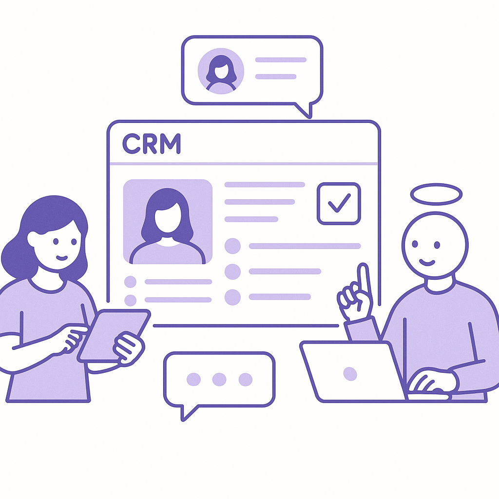
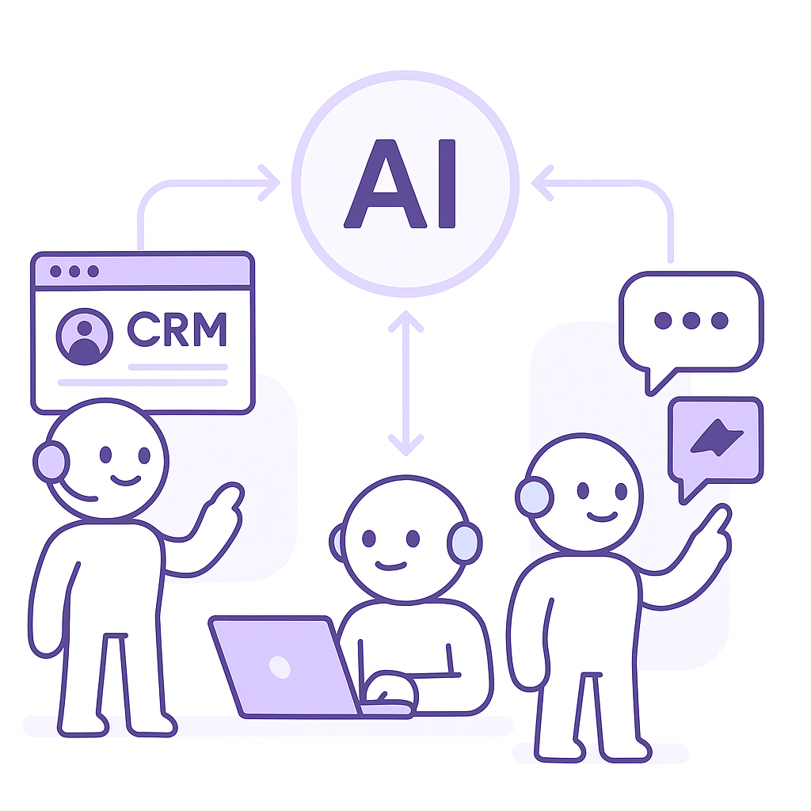
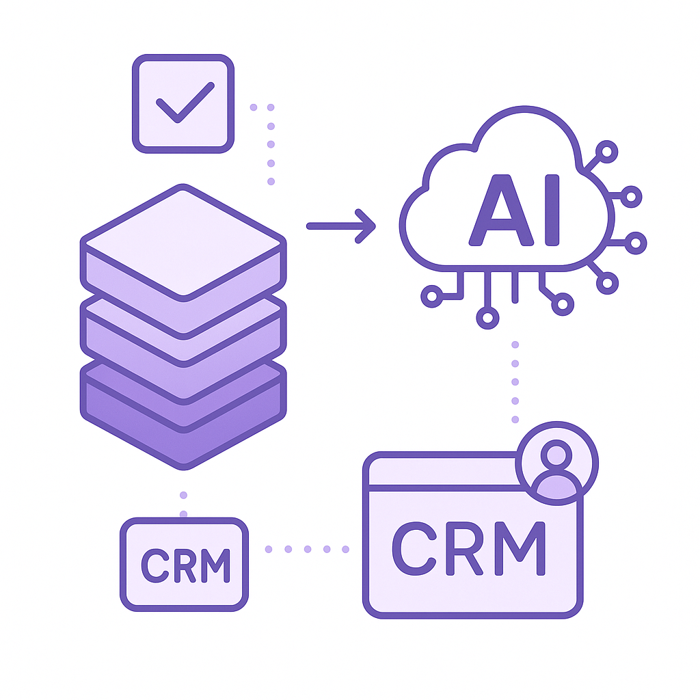

Publishing Recommendation
reviseThe drafted posts contain some hype and lack precise evidence to support claims, particularly regarding the impact of cost reductions and AI governance. These need clearer substantiation and alignment with our brand voice.
Today's drafts cover significant trends in AI cost reduction, data privacy, and cybersecurity. However, several posts lean towards hype without enough backing. The posts on Anthropic's cost reductions and AI governance need more specific examples and less hyperbolic language. Suggested comments are insightful and align well with our brand voice, offering balanced perspectives.
LinkedIn Posts (6)
1. Anthropic's Claude Fable 5.1 and Mythos 5.1 AI Models Released with Cost Reductions ★ Purands solution · high priority
CTA: How are you planning to integrate cost-efficient AI into your strategies?
Caption: Cost savings with Claude Fable 5.1 in retention marketing.
Alternative hooks
- Anthropic's latest AI model cuts costs by 45% - what does this mean for your business?
- Cutting costs without cutting corners: Claude Fable 5.1 makes it possible.
- Cost efficiency is the new frontier in AI - here's how we're leveraging it.
Research behind this post (sources, summaries & confidence)
Anthropic's Claude Fable 5.1 and Mythos 5.1 AI Models Released with Cost Reductions conf 0.80 · AI industry
Anthropic's release of Claude Fable 5.1, which is up to 45% cheaper for agentic work, directly impacts the cost efficiency of deploying AI agents in retention marketing. This is crucial for businesses aiming to leverage AI without escalating costs.
Sources & what I took from each
- Anthropic released Claude Fable 5.1 and Mythos 5.1 with significant cost reductions.: Both Verge and VentureBeat articles report cost reductions of up to 45% for specific tasks. ↗ read source
Statistics
- Up to 45% cheaper for agentic work.
Original trend links
- https://www.theverge.com/ai-artificial-intelligence/987830/anthropic-claude-fable-mythos-5-1
- https://venturebeat.com/technology/anthropics-claude-fable-5-1-and-mythos-5-1-arrive-with-a-75-cost-reduction-for-fable-cache-reads
Risks / caveats
- Cost reductions may not apply to all use cases.
- Potential trade-offs in performance for cost savings.
2. Perplexity's Hybrid AI Model for Data Privacy ★ Purands solution · high priority
CTA: How are you ensuring data privacy in your retention strategies?
{kind=link}
Image prompt · isometric-flat
Caption: Local processing enhances data privacy.
Alternative hooks
- Keeping customer data off the cloud isn't just a technical choice; it's a trust builder.
- Why Perplexity's hybrid AI model is a game-changer for data privacy.
- Customer trust hinges on how you handle their data. Are you doing it right?
Research behind this post (sources, summaries & confidence)
Perplexity's Hybrid AI Model for Data Privacy conf 0.70 · Customer Data Platforms
Perplexity's hybrid AI model, which keeps data off the cloud, is significant for customer data platforms focusing on data privacy and security, crucial for retention marketing strategies.
Sources & what I took from each
- Perplexity's hybrid AI model enhances data privacy by keeping data off the cloud.: VentureBeat article discusses how Perplexity's model keeps data local to enhance privacy. ↗ read source
Original trend links
Risks / caveats
- Hybrid models may face limitations in scalability.
- Potentially higher costs for local data storage.
3. JioHotstar Expands Globally Without Sports Content ★ Purands solution · high priority
CTA: How are you adapting your content strategy to the changing digital landscape?

⬇ Download image{kind=link}
Image prompt · isometric-flat
Caption: Engage customers without traditional content magnets.
Alternative hooks
- JioHotstar is expanding globally, but without sports content.
- What happens when a major streaming service drops sports in its global push?
- The content game is changing: JioHotstar goes global without sports.
Research behind this post (sources, summaries & confidence)
JioHotstar Expands Globally Without Sports Content conf 0.60 · WhatsApp commerce
JioHotstar's expansion into international markets without sports content highlights the shifting dynamics in digital content consumption. This affects messaging-first commerce strategies, particularly in the APAC region.
Sources & what I took from each
- JioHotstar is expanding globally without sports content.: TechCrunch article confirms JioHotstar's global expansion strategy without including sports content. ↗ read source
Original trend links
- https://techcrunch.com/2026/09/01/reliances-jiohotstar-takes-its-streaming-empire-global-without-sports
- https://www.techmeme.com/260901/p57#a260901p57
Risks / caveats
- Lack of sports content may limit audience appeal in sports-centric markets.
- Content strategy may not align with user expectations globally.
4. Orchestration Challenges in AI for Customer Experience ★ Purands solution · high priority
CTA: How are you handling AI orchestration challenges in your CRM strategy?

⬇ Download image{kind=link}
Image prompt · isometric-flat
Caption: Simplifying AI orchestration for retention marketing.
Alternative hooks
- Orchestrating AI agents is tougher than it looks.
- Struggling with AI orchestration in customer engagement?
- AI agent orchestration: the hidden challenge in customer experience.
Research behind this post (sources, summaries & confidence)
Orchestration Challenges in AI for Customer Experience conf 0.60 · CRM strategy
The complexity of orchestrating AI agents across different customer engagement channels is a significant challenge. This affects CRM and lifecycle messaging strategies essential for retention marketing.
Sources & what I took from each
- Orchestration is a major challenge in AI-driven customer experience.: VentureBeat article highlights the complexity of orchestrating AI agents in customer engagement. ↗ read source
Original trend links
Risks / caveats
- Difficulty in synchronizing AI agents across multiple channels.
- Potential for fragmented customer experiences.
5. Enterprise AI Governance: The Role of Data Layers ★ Purands solution · high priority
CTA: How do you ensure data governance in your AI systems?

⬇ Download image{kind=link}
Image prompt · isometric-flat
Caption: Data layers in AI governance for retention marketing.
Alternative hooks
- AI agents are getting more autonomous. But how do we keep them in check?
- Data layers: the unsung heroes of AI governance.
- In AI retention marketing, data governance isn't just a buzzword.
Research behind this post (sources, summaries & confidence)
Enterprise AI Governance: The Role of Data Layers conf 0.50 · AI startups
As AI agents gain autonomy, managing governance through data layers becomes critical. This is particularly important for retention marketing platforms that rely on data-driven decision-making.
Sources & what I took from each
- Governance of AI agents through data layers is becoming important.: VentureBeat article discusses the role of data layers in AI governance. ↗ read source
Original trend links
Risks / caveats
- Complexity in implementing effective data layer governance.
- Potential for data governance to lag behind AI agent capabilities.
6. OpenAI's Astra Model Preview Raises Security Concerns
CTA: How do you think businesses should prepare for AI models with dual capabilities?
Alternative hooks
- OpenAI's Astra model is more than just another AI - it's a potential cybersecurity game-changer.
- What if the AI protecting your data could also break into it? Meet Astra.
- The same AI that safeguards your systems could also be the one to breach them. That's Astra for you.
Research behind this post (sources, summaries & confidence)
OpenAI's Astra Model Preview Raises Security Concerns conf 0.70 · AI industry
OpenAI's upcoming Astra model is notable for its capabilities in cybersecurity, which could influence how AI is integrated into secure retention marketing strategies. Businesses must be aware of potential risks and necessary precautions.
Sources & what I took from each
- OpenAI's Astra model has cybersecurity capabilities.: TechCrunch article discusses Astra's potential in cybersecurity applications. ↗ read source
Original trend links
- https://techcrunch.com/2026/09/01/open-ais-astra-model-is-on-the-way-and-very-good-at-breaking-into-computer-systems
- https://www.theverge.com/ai-artificial-intelligence/987695/openai-astra-unreleased-model-cybersecurity-delay
Risks / caveats
- Model may be misused for malicious purposes.
- Security concerns may delay deployment.
Today's Trends
| # | Trend | Category | Why it matters |
|---|---|---|---|
| 1 | Anthropic's Claude Fable 5.1 and Mythos 5.1 AI Models Released with Cost Reductions
source source |
AI industry | Anthropic's release of Claude Fable 5.1, which is up to 45% cheaper for agentic work, directly impacts the cost efficiency of deploying AI agents in retention marketing. This is crucial for businesses aiming to leverage AI without escalating costs. |
| 2 | OpenAI's Astra Model Preview Raises Security Concerns
source source |
AI industry | OpenAI's upcoming Astra model is notable for its capabilities in cybersecurity, which could influence how AI is integrated into secure retention marketing strategies. Businesses must be aware of potential risks and necessary precautions. |
| 3 | JioHotstar Expands Globally Without Sports Content
source source |
WhatsApp commerce | JioHotstar's expansion into international markets without sports content highlights the shifting dynamics in digital content consumption. This affects messaging-first commerce strategies, particularly in the APAC region. |
| 4 | Enterprise AI Governance: The Role of Data Layers
source |
AI startups | As AI agents gain autonomy, managing governance through data layers becomes critical. This is particularly important for retention marketing platforms that rely on data-driven decision-making. |
| 5 | Orchestration Challenges in AI for Customer Experience
source |
CRM strategy | The complexity of orchestrating AI agents across different customer engagement channels is a significant challenge. This affects CRM and lifecycle messaging strategies essential for retention marketing. |
| 6 | Perplexity's Hybrid AI Model for Data Privacy
source |
Customer Data Platforms | Perplexity's hybrid AI model, which keeps data off the cloud, is significant for customer data platforms focusing on data privacy and security, crucial for retention marketing strategies. |
| 7 | Churn Prediction Platform Using MLOps
source |
Retention marketing | The development of a churn prediction platform highlights the application of MLOps in managing customer retention. This is pivotal for businesses aiming to enhance customer loyalty and reduce churn. |
| 8 | Shopify Loyalty and Rewards App Developments
source source |
Shopify ecosystem | New developments in Shopify loyalty apps, such as tier systems and referral programs, are important for businesses looking to enhance customer engagement and loyalty within the Shopify ecosystem. |
Risk Assessment
- Exaggerated claims about AI 'game-changing' impacts.
- Potential for misunderstanding cost reduction impacts without specific context.
- Overgeneralization of AI governance benefits without detailed mechanism.
Suggested LinkedIn Comments (30)
Open each post, then paste the copied comment. Nothing is posted automatically.
1. insight · rss:techcrunch.com — The company told TechCrunch he is "pursuing new endeavors." Karklin will be repl
Post by: rss:techcrunch.com
Why it works: It connects the leadership change to potential strategic implications, adding depth to the news.
↗ Open LinkedIn post to paste comment2. insight · rss:techcrunch.com — JioHotstar will only have entertainment content when it launches in the UK, Cana
Post by: rss:techcrunch.com
Why it works: The comment evaluates the strategic choice behind JioHotstar's content focus, providing a perspective on market strategy.
↗ Open LinkedIn post to paste comment3. insight · rss:techcrunch.com — Apple Maps is following President Trump's executive order to change the name of
Post by: rss:techcrunch.com
Why it works: It adds a broader perspective on the implications of tech companies' interactions with political directives.
↗ Open LinkedIn post to paste comment4. insight · rss:techcrunch.com — AI model-training startup AfterQuery has reportedly raised a round that valued i
Post by: rss:techcrunch.com
Why it works: This comment provides a balanced view by acknowledging both the opportunity and the risks associated with rapid valuation growth.
↗ Open LinkedIn post to paste comment5. insight · rss:techcrunch.com — OpenAI previewed the precautions it is taking as it prepares to release Astra, i
Post by: rss:techcrunch.com
Why it works: It emphasizes the significance of OpenAI's security measures, aligning with broader discussions on responsible AI.
↗ Open LinkedIn post to paste comment6. insight · rss:techcrunch.com — While some of the features see Google playing catch-up to Apple, which already o
Post by: rss:techcrunch.com
Why it works: The comment highlights the strategic use of AI to differentiate and innovate, offering a forward-looking perspective.
↗ Open LinkedIn post to paste comment7. insight · rss:techcrunch.com — X is investigating a wave of unsolicited password reset emails that it believes
Post by: rss:techcrunch.com
Why it works: It points out the security implications of the issue, emphasizing the importance of user trust in new services.
↗ Open LinkedIn post to paste comment8. insight · rss:techcrunch.com — Apple is hosting its iPhone release event next week, which is rumored to feature
Post by: rss:techcrunch.com
Why it works: It focuses on the potential market impact and innovation aspect of the foldable iPhone, adding a forward-thinking perspective.
↗ Open LinkedIn post to paste comment9. insight · rss:techcrunch.com — Fable 5.1 includes changes meant to reduce token cost and false-positive restric
Post by: rss:techcrunch.com
Why it works: The comment highlights the practical benefits of the updates, offering a clear view on their importance for users.
↗ Open LinkedIn post to paste comment10. insight · rss:techcrunch.com — New York's prestigious-yet-secretive venture firm Thrive Capital finally speaks
Post by: rss:techcrunch.com
Why it works: It connects the specific incident to broader trends, showing the potential cultural impact of venture capital in sports.
↗ Open LinkedIn post to paste comment11. respectful challenge · rss:www.theverge.com — Google has reportedly been reaching out to a number of Hollywood's biggest studi
Post by: rss:www.theverge.com
Why it works: It acknowledges the potential benefits while raising a valid concern about fairness and transparency.
↗ Open LinkedIn post to paste comment12. insight · rss:www.theverge.com — Anthropic says its newest AI models, Fable 5.1 and Mythos 5.1, address criticism
Post by: rss:www.theverge.com
Why it works: It appreciates the improvements while emphasizing the importance of ethical considerations in AI.
↗ Open LinkedIn post to paste comment13. opinion · rss:www.theverge.com — Apple Maps has officially changed the name of Lake Ontario to Lake America, as r
Post by: rss:www.theverge.com
Why it works: It expresses a clear stance on the importance of preserving historical names.
↗ Open LinkedIn post to paste comment14. insight · rss:www.theverge.com — Best Buy is celebrating Labor Day all week long with big deals, including a deep
Post by: rss:www.theverge.com
Why it works: It highlights the value proposition of the deal with a focus on performance and price.
↗ Open LinkedIn post to paste comment15. opinion · rss:www.theverge.com — After an unreleased OpenAI model wreaked enough havoc to make international head
Post by: rss:www.theverge.com
Why it works: It supports OpenAI's cautious approach, emphasizing the importance of safety in AI development.
↗ Open LinkedIn post to paste comment16. insight · rss:www.theverge.com — Sonos unveiled a bunch of new stuff today at its open house event. There's the $
Post by: rss:www.theverge.com
Why it works: It acknowledges the innovation while pointing out the importance of real-world performance.
↗ Open LinkedIn post to paste comment17. opinion · rss:www.theverge.com — As he steps down from his post as Apple CEO today, Tim Cook leaves behind a most
Post by: rss:www.theverge.com
Why it works: It recognizes Cook's contributions while looking ahead to future possibilities.
↗ Open LinkedIn post to paste comment18. insight · rss:www.theverge.com — Depending on who you ask, developer platform Hugging Face was recently attacked
Post by: rss:www.theverge.com
Why it works: It emphasizes the importance of responsibility and communication in AI safety discussions.
↗ Open LinkedIn post to paste comment19. opinion · rss:www.theverge.com — New Apple CEO John Ternus sent out his first staff memo, thanking his predecesso
Post by: rss:www.theverge.com
Why it works: It sets expectations for Ternus's leadership while acknowledging the challenges ahead.
↗ Open LinkedIn post to paste comment20. insight · rss:www.theverge.com — Apple is pushing for "expedited discovery" in its legal battle against OpenAI ov
Post by: rss:www.theverge.com
Why it works: It highlights the significance of evidence handling in legal tech disputes, suggesting broader industry implications.
↗ Open LinkedIn post to paste comment21. insight · rss:feeds.arstechnica.com — 333 miles of real-world range with uncompromised comfort and off-road ability.
Post by: rss:feeds.arstechnica.com
Why it works: It highlights the practical significance of the advancement in EV technology.
↗ Open LinkedIn post to paste comment22. insight · rss:feeds.arstechnica.com — "Black hole stars," making cookies from plastic, tiny sound-powered drones, and
Post by: rss:feeds.arstechnica.com
Why it works: It connects the post's examples to a broader theme of interdisciplinary innovation.
↗ Open LinkedIn post to paste comment23. insight · rss:feeds.arstechnica.com — Historically, state health departments determine cases and deaths, not the CDC.
Post by: rss:feeds.arstechnica.com
Why it works: It adds a perspective on why decentralized health data management could be beneficial.
↗ Open LinkedIn post to paste comment24. insight · rss:feeds.arstechnica.com — New features are rolling out across the Android ecosystem starting today.
Post by: rss:feeds.arstechnica.com
Why it works: It underscores the strategic importance of continuous updates in tech ecosystems.
↗ Open LinkedIn post to paste comment25. respectful challenge · rss:feeds.arstechnica.com — FTC says firm replaces actual ad-auction results "with higher prices set by Amaz
Post by: rss:feeds.arstechnica.com
Why it works: It frames the issue as a broader concern about market integrity, not just a single incident.
↗ Open LinkedIn post to paste comment26. insight · rss:feeds.arstechnica.com — When the average car could only do 40 mph, this Bentley could break 100.
Post by: rss:feeds.arstechnica.com
Why it works: It uses a historical example to illustrate the impact of technological breakthroughs.
↗ Open LinkedIn post to paste comment27. insight · rss:feeds.arstechnica.com — Independent safety officials also have high praise for changes by NASA leadershi
Post by: rss:feeds.arstechnica.com
Why it works: It connects the post's praise to the importance of safety in maintaining trust.
↗ Open LinkedIn post to paste comment28. insight · rss:feeds.arstechnica.com — NASA's cost estimate for SR-1 Freedom is $2.1 billion, but that doesn't include
Post by: rss:feeds.arstechnica.com
Why it works: It highlights a common issue in project budgeting that affects public perception.
↗ Open LinkedIn post to paste comment29. opinion · rss:feeds.arstechnica.com — "We could really be facing the great filter."
Post by: rss:feeds.arstechnica.com
Why it works: It provides a viewpoint on the significance of the 'great filter' in the context of technological progress.
↗ Open LinkedIn post to paste comment30. insight · rss:feeds.arstechnica.com — It's the lightest Bentley in 85 years.
Post by: rss:feeds.arstechnica.com
Why it works: It draws attention to the balance of maintaining brand heritage while adopting new technology.
↗ Open LinkedIn post to paste comment